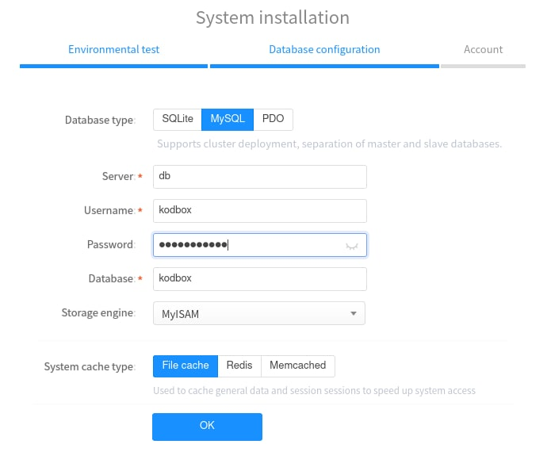

Kodbox me está convenciendo mucho, su editor de texto, servidor WebDAV,… así que voy a montar el servicio pero está vez con mariadb, que me va a permiter tener una base de datos más robusta que sqlite .
Este es el docker-compose.yml
version: "3.5"
services:
db:
image: mariadb
container_name: kodboxdbm
command: --transaction-isolation=READ-COMMITTED --binlog-format=ROW
volumes:
- "./db:/var/lib/mysql"
environment:
- "MYSQL_DATABASE=kodbox"
- "MYSQL_USER=kodbox"
- "MYSQL_PASSWORD=mipassword"
- "MYSQL_SERVER=kodbox"
- "MYSQL_PORT=3306"
- "TZ=Europe/Madrid"
- "MYSQL_ROOT_PASSWORD=mipassword"
restart: always
app:
image: kodcloud/kodbox
container_name: kodboxm
ports:
- "80:80"
links:
- db
volumes:
- "./data:/var/www/html"
restart: alwaysEs posible añadir las variables del usuario y contraseña del administrador.
La primera vez que iniciemos el servicio, tenemos que añadir el usuario, nombre de base de datos,… que hemos añadido en las variables del docker-compose.yml , tal como aparece en la imagen.

Publicado por Angel el Tuesday 17 May del 2022
También te puede interesar:
Powered by org-bash-blog
Written in OrgMode with Emacs and converted to HTML with Pandoc

Este obra está bajo una licencia de Creative Commons Reconocimiento-NoComercial-CompartirIgual 4.0 Internacional.